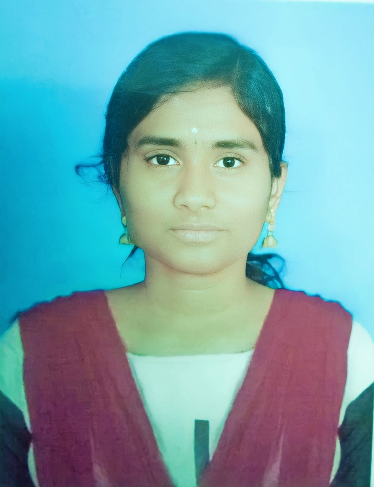

web developer |
I AM RATHIKASRI FROM SALEM DAUGHTER OF KANNAN I AM CURRENTLY PURSUING THIRD YEAR BTECH IN RP SARATHY INSTITUTE OF TECHNOLOGY AND ALSO PURSUING INTERN IN CASTEE . I DID MY HSC IN JAYARANI GIRLS HIGHER SECONDARY SCHOOL. AND I DID MY SSLC IN JAYARANI GIRLS HIGHER SECONDARY SCHOOL SALEM . MY LONG TERM GOAL I WANNA STRAT A STRATUP , MY SHORT TERM TERM GOAL IS I WANT TO PLACE IN TIER 1 COMPANY. I AM CURRENTLY REASERCHING ABOUT AUTISM. ALSO SPITUALITY |
|---|